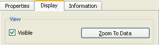
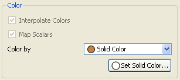
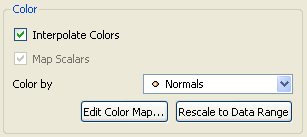
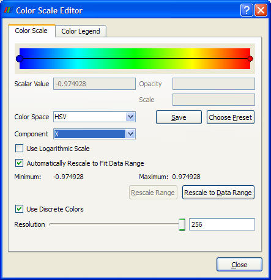
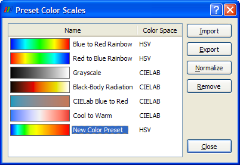
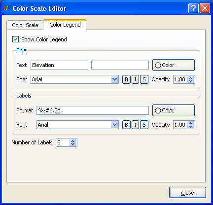
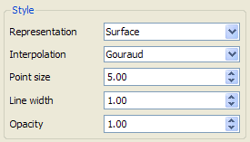
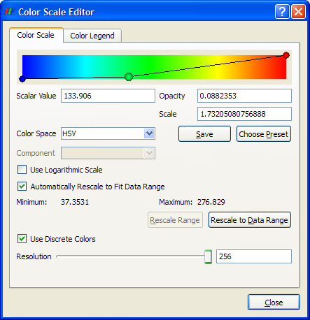
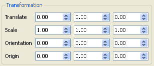

View section
Color section
Style selection
Transformation section

If the dataset selected in the pipeline browser has never been added to the selected view, then the Display tab will only contain the View section, and the only control will be the Visible checkbutton. Once the dataset is visible in the selected view, several more sections are added to the Display tab, and the Zoom to Data button is added to the View section. This button centers the viewing position on the dataset selected from the pipeline browser. This item will fill most of the selected view unless another dataset is between it and the viewing position.

There are two options available for coloring a dataset. To use the same color over an entire dataset, select Solid Color from the "Color by" menu. Clicking the Set Solid Color button below the "Color by" menu displays a color chooser from which a particular color may be selected. If displaying a dataset in a solid color, the rest of the controls in the Color section of the Display tab are inactive.

If the representation used for displaying the dataset is anything other than
Outline (discussed later on this page), and the dataset contains point- or
cell-centered arrays (attributes), then the "Color by" menu also lists the
names of the arrays. The point-centered arrays are indicated by  , and the cell-centered ones are
indicated by
, and the cell-centered ones are
indicated by  . Selecting an
array name causes the dataset to be colored based on the underlying values in
that array. In almost all cases, the mapping from data values to colors is
determined by a color map. This color map may be edited from the dialog that
appears from clicking the Editor Color Map button. The only case where colors
may be determined differently is if the data array selected for coloring has
three components and is of type unsigned char. In this case, the three array
values may be directly used as colors if the Map Scalars checkbox is
unchecked. In this case the three components of the array will specify the
red, green, and blue color components. If the Map Scalars checkbox is
checked, the data array is treated the same as any other data array, and
color is determined by passing the data values through a color scale.
. Selecting an
array name causes the dataset to be colored based on the underlying values in
that array. In almost all cases, the mapping from data values to colors is
determined by a color map. This color map may be edited from the dialog that
appears from clicking the Editor Color Map button. The only case where colors
may be determined differently is if the data array selected for coloring has
three components and is of type unsigned char. In this case, the three array
values may be directly used as colors if the Map Scalars checkbox is
unchecked. In this case the three components of the array will specify the
red, green, and blue color components. If the Map Scalars checkbox is
checked, the data array is treated the same as any other data array, and
color is determined by passing the data values through a color scale.
Regardless of how the data values map to colors, interpolation must be done to determine the colors that do not lie at points (nodes) in the dataset. (When coloring by cells (elements), no interpolation is done from one cell to the next; each cell is assigned a solid color.) If the Interpolate Colors checkbutton is checked (the default), the data values are interpolated across cell faces before being mapped to colors. This results in the colors chosen exactly matching those chosen in the color scale editor. However, some older graphics cards do not support this functionality. If the Interpolate Colors checkbox is unchecked, then the interpolation happens in color space. This sometimes results in colors that are not in the specified color map.

To display the Color Scale Editor dialog, click the Edit Color Map button. At the top of the Color Scale tab of the Color Scale Editor dialog is a color map editor. This editor displays the mapping between scalar values and colors, and provides the means for making modifications to this mapping. The color scale is shown in the background of the color map editor. The nodes in the color map editor (shown as colored spheres) indicate the mapping from a scalar value to a color. The colors are interpolated linearly between the nodes using the color space chosen in the Color Space menu below the color map editor. More nodes may be added simply by left-clicking within the editor. A node in the color map editor becomes selected when it is left-clicked. The selected node is indicated as a larger sphere in the editor. Pressing either the 'd' or Delete key removes the selected node from the editor.
Clicking the currently selected node or double-clicking any node causes a color chooser to be displayed, from which a new color may be selected for the node. The scalar value of the selected node may be interactively changed by dragging the node either left (decreasing scalar value) or right (increasing scalar value); the node's color remains the same during this process. The scalar value for the selected node may also be changed manually by entering a new value in the Scalar Value entry box. The new scalar value will automatically take effect after a couple seconds.

Modifications made to the color map may be saved for future use by clicking the Save button below the color map editor. This causes the Preset Color Scales dialog to be displayed, with the current color map added to the list of presets. Its name is listed as New Color Preset, but the name may be changed by left-clicking it and typing a new name. Along the right side of this dialog is a series of buttons. The first two (Import and Export) allow saving out and loading in of color map presets. This is useful for sharing color maps with other ParaView users. The next button, Normalize, rescales the scalar values in the color map so that they lie between 0 and 1; the values will be scaled to match the scalar range in use when applied to another dataset. If you do not rescale the scalar values, then the original scalar values are retained regardless of the scalar range of the dataset. Whether or not to normalize the scalar range depends on the application. After the Normalize button is the Remove button. This allows the user to remove color map presets that are no longer needed. The last button, Close, closes this dialog and returns to the color scale editor dialog.
If the array selected in the "Color by" menu has more than one component (i.e., contains vector data rather than scalar data), ParaView defaults to mapping from vector magnitude to color. This can be changed using the Component menu on the Color Scale tab in the Color Scale Editor dialog: the color may be derived from any component of the vector array or from the magnitude of the vectors in the array.
By default in ParaView, the colors in the color map are determined directly from the values in the chosen data array (either a scalar array or a component/magnitude of a vector array). If the dataset is being colored based on a scalar array, there is also the option of deriving the color from the logarithm (base 10) of the underlying data values. This is done by checking the Use Logarithmic Scale checkbutton on the Color Scale tab in the Color Scale Editor dialog. This option is not available when coloring by a multi-component array.
ParaView has one color map per given array name. When the array name chosen for coloring a particular dataset (A) is already being used to color another dataset (B), ParaView provides the option for whether to rescale the color map to match the range of the data array in dataset A. This functionality is provided by the "Automatically Rescale to Fit Data Range" checkbox on the Color Scale tab of the Color Scale Editor dialog. Even if this option is selected, the "Rescale to Data Range" button below this checkbox is enabled. This is because automatic rescaling happens when a new dataset is colored by the same array; the color map does not automatically rescale when the timestep in a given dataset changes. Clicking the "Rescale to Data Range" button rescales the color map to match the underlying array, even if only the timestep changed. This button is also available on the Display tab.
If the "Automatically Rescale to Fit Data Range" checkbox is unchecked, then the Rescale Range button becomes active. Clicking this button displays a dialog box for entering the minimum and maximum scalar values that should be used in the color map. Clicking the Rescale button in this dialog causes the new minimum and maximum values for the color map to take effect. These minimum and maximum values will be used regardless of the range of the underlying data.
At the bottom of the Color Scale tab in the color scale editor dialog is a check button (Use Discrete Colors) for specifying whether the color map is continuous or uses a fixed number of colors. By default a discrete number of colors (256) are used. When the color map is not continuous, the Resolution slider is enabled; this specifies the number of colors to use in the color map. It ranges from 2 to 256. Using discrete colors will map a range of scalar values to the same color. When using a continuous color map, different scalar values are assigned different colors.

The Color Legend tab in the Color Scale Editor dialog controls whether and
how the color legend (showing the mapping from data values to colors) is
shown in the selected view. The Show Color Legend checkbox determines whether
the color legend is visible; this functionality is duplicated on ParaView's
toolbar using the following button:  . The Title section contains controls for the
appearance of the title of the color legend: the text used (defaults to the
name of the array from which the colors in the dataset are derived), the
color, font, formatting (bold, italicized, or shadowed), and opacity. The
second text entry box beside the "Text" label is usually used for additional
information about the array being used (e.g., which component of a vector
array is determining colors). Most of the same controls are also available
for the labels showing the data values that map to particular colors. The
exception is that instead of directly entering text, the format of the data
value labels is specified using a format string like the ones accepted by the
printf function. At the bottom of this tab of the Color Scale Editor dialog
is a spinbox for specifying the number of labels (data values) to display
beside the color gradient.
. The Title section contains controls for the
appearance of the title of the color legend: the text used (defaults to the
name of the array from which the colors in the dataset are derived), the
color, font, formatting (bold, italicized, or shadowed), and opacity. The
second text entry box beside the "Text" label is usually used for additional
information about the array being used (e.g., which component of a vector
array is determining colors). Most of the same controls are also available
for the labels showing the data values that map to particular colors. The
exception is that instead of directly entering text, the format of the data
value labels is specified using a format string like the ones accepted by the
printf function. At the bottom of this tab of the Color Scale Editor dialog
is a spinbox for specifying the number of labels (data values) to display
beside the color gradient.

From the Representation menu in the style section of the Display tab, ParaView provides several options for how to display the geometry of the dataset. The options available regardless of the dataset type are Points, Wireframe, Surface, and Outline. Volume rendering (discussed later on this page) is only available for unstructured grid and uniform rectilinear grid (volume) datasets. Selecting Points displays the vertices of the dataset as points. The Wireframe option shows all the edges of the cells in the dataset as lines. If Surface is selected, the faces of the cells making up the exterior surface of the dataset are shown (and colored as specified in the "Color by" menu). For most dataset types, if Outline is selected, an axis-aligned bounding box is drawn, marking the minimum and maximum extents of the dataset in each dimension. If the dataset is curvilinear, then the outside edges of the dataset are drawn instead of an axis-aligned bounding box. Structured grids, rectilinear grids, and uniform rectilinear grids (images/volumes) default to being drawn using a Wireframe representation. All other dataset types default to being drawn as surfaces.
When the dataset is displayed as a surface, the Interpolation menu in this section determines how shading (lighting effects) is applied to the dataset. If Flat is selected, each polygon in the surface will have a single intensity value, but different polygons will have different intensities, making the surface look faceted. If instead Gouraud is chosen (the default), and the dataset has point-centered normal vectors, then the intensity values will be interpolated across each polygon, giving a smoother appearance. (Gouraud shading has no effect without point-centered normals, but the Normals Generation filter can be used to add them.)
If the geometric representation of the dataset contains points (vertices), use the "Point size" spinbox to specify how large the points should appear. The value of the spinbox indicates the number of pixels in the horizontal and vertical directions each point should use. If the dataset contains lines, the "Line width" spinbox indicates (in pixels) the width of the lines. The default point size is 5 pixels, and the default line width is 1 pixel.
For datasets represented as geometry (i.e., not volume rendered), the Opacity spinbox determines how opaque/transparent the geometry is. (For volume rendered datasets, this spinbox has no effect.) The opacity value ranges between 0 and 1. An opacity of 1 (the default) means the dataset is completely opaque. An opacity of 0 means the dataset is completely transparent.

ParaView supports volume rendering of unstructured grid and uniform rectilinear grid (volume) datasets. For datasets of these types, a Volume option is added to the Representation menu. By clicking on the Edit Color Map button (in the Color section), the above dialog box is displayed. The dialog is the same as the one displayed for specifying a color map for geometry rendered as a surface except that the color map editor at the top of the Color Scale tab in the dialog can be used to edit both color and opacity. Both of these values are specified per node in the color map editor. The color is indicated and chosen as it was for editing color alone. The opacity at a given node (scalar value) is indicated by its position along the Y-axis (height). The bottom of the Y-axis maps to an opacity value of 0 (completely transparent), and the Y-axis maps to an opacity value of 1 (completely opaque). The opacity of a node may be changed by clicking and dragging a node in the vertical direction. The opacity for the currently selected node may also be modified by entering a value in the Opacity text entry box. Values entered here will take effect after a couple seconds.

The Transformation section of the Display tab provides spinboxes for performing affine transformations on the associated dataset. Positioning the dataset in the view using these controls does not change the internal coordinates of the dataset. The Translate controls reposition the dataset along the X, Y, and Z axes. The Scale controls increase or decrease the 3D size of the dataset in each of the three dimensions. The Orientation controls rotate the dataset in X, Y, or Z by the specified number of degrees. This rotation happens around the coordinate specified by the Origin spinboxes.